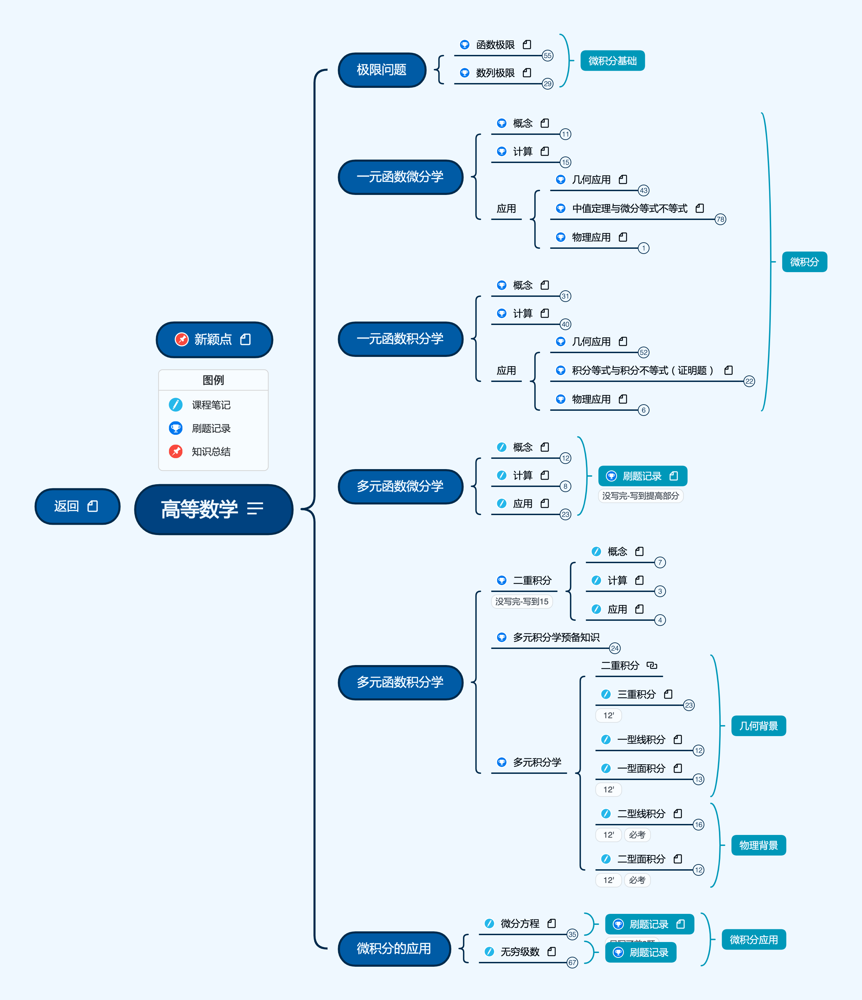

PKM - 高等数学
2022.10.03
[toc]

图例说明
加粗：章标题
链接：笔记超链接
斜体：题型/主要内容
目录
- 预备知识
- 高等数学预备知识
- 极限问题
- 函数极限
- 定义（是常数、唯一性、局部有界性、局部保号性、等式脱帽法）
- 计算（无穷小、恒等变形、中值定理、洛必达、泰勒、无穷小比阶）
- 抽象类型（洛必达失效用夹逼、单调有界）
- 连续与间断
- 数列极限
- 定义（类似于函数极限）
- 计算（归结原则、构造|xn-a|、单调有界、夹逼、综合题）
- 一元函数微分学
- 一元函数微分学的概念
- 一元函数微分学的计算
- 各种计算导数
- 高阶导数：归纳法、莱布尼兹、泰勒展开式抽象展开
- 一元函数微分学的几何应用
- 极值与单调性（三个判断方法）
- 拐点与凹凸性（三个判断方法）
- 渐近线、曲率曲率半径
- 中值定理，微分等式与不等式
- 确认辅助函数
- 最值定理
- 介值定理
- 平均值定理
- 零点定理
- 费马定理
- 罗尔定理
- 柯西中值定理
- 积分中值定理
- 拉格朗日中值定理
- 泰勒公式
- 微分等式
- 微分不等式
- 一元函数微分学的物理应用
- 一元函数积分学
- 一元函数积分学的概念与性质
- 定积分定义(i/n)
- 祖孙三代(奇偶性、周期性等)
- 反常积分敛散性(p积分、广义p积分)
- 一元函数积分学的计算
- 基本积分表
- 有理函数积分
- 点火公式大全、区间再现、诱导公式、区间化简公式、对称性下的积分问题、定积分分部积分法中的“升阶”“降阶”问题、分段函数的定积分
- 一元函数积分学的几何应用
- 积分等式与不等式
- 一元函数积分学的物理应用
- 多元函数微分学
- 多元函数微分学
- 全微分：全增量->线性增量->做极限
- 偏导数连续性：定义法求，公式法求，极限相等
- 链式求导、隐函数存在定理、逆问题（用dz反求z）
- 无条件极值(Delta=AC-B^2..)
- 有条件极值(拉格朗日乘子法)
- 多元函数积分学
- 二重积分
- 轮换对称性、普通对称性
- 极直坐标系互换、积分次序互换
- 多元函数预备知识
- 向量：数量积、向量积、混合积、方向余弦
- 直线与平面：直线方程、平面方程、直线平面位置关系
- 空间曲线：曲线方程、切线、法平面
- 空间曲面：曲面方程、切平面、法线
- 场论：方向导数、梯度、散度、旋度
- 多元积分学
- 三重积分、形心公式
- 第一型曲线积分、形心公式
- 第一型曲面积分(eg曲面的投影)、形心公式
- 第二型曲线积分、化为定积分、格林公式、斯托克斯公式
- 第二型曲面积分、高斯公式
- 微积分的应用
- 微分方程
- 变量可分离
- 可化为变量可分离(u=ax+by+c、u=y/x)
- 一阶线性微分方程(公式法)
- 伯努利方程(y^n除过去)
- 二阶可降阶微分方程(赶尽杀绝y、斩草除根x)
- 二阶变系数线性微分方程(通解、两种特解)
- n阶常系数齐次线性微分方程
- 无穷级数
- 常数项级数：正项级数、交错项级数
- 判敛散：比较判别法、比较判别法极限、比值判别法、跟值判别法、积分判别法、交错相级数
- 幂级数：阿贝尔定理(收敛域)、幂级数求和
- 物理应用
介绍
按照张宇2022与2023考研数学提高班进行归纳与整合。
资源
链接: https://pan.baidu.com/s/1mFy2Y7eLtRVwZMGfbkrxiQ
提取码: FX7U
如果资源失效请联系我
版本
按照2022张宇考研课程进行整理，完成全部知识框架搭建
按照2023张宇基础30讲进行重新学习